Pragmatism over Dogma: The JVP’s Rebirth in a Realist World
Pragmatism over Dogma: The JVP’s Rebirth in a Realist World
Jaffna Monitor hellojaffnamonitor@gmail.com 3 Pragmatism over Dogma: The JVP’s Rebirth in a Realist World T here’s a meme doing the rounds on Facebook about Modi’s recent visit: During his visit to Sri Lanka, the Indian Prime Minister, seated in a car with his host, President Anura Kumara Dissanayake, looked around with mild confusion and said: “This is my fourth visit to Sri Lanka. Every time I came before, there were always crowds of angry people in black shirts, waving black flags and shouting anti-Indian slogans— accusing us of expansionism and imperialism. But this time... not a single protester in sight. Have they changed their view of India? Or... did we just take a different route?” To this, Anura Kumara grinned and replied: “We were those guys. Now we’re running the country. We know we can’t go around antagonising a regional superpower anymore.” Sri Lanka witnessed a once-in-a-lifetime reception for a foreign leader during the recent visit of Indian Prime Minister Narendra Modi. Beyond the optics, the two countries signed several key agreements—including a landmark defence cooperation pact that previous governments had either hesitated to pursue or outright avoided. It’s almost amusing—and at the same time, commendable for its pragmatism—to see how far the JVP has come. Once a party that gained traction largely through its strong anti- Indian rhetoric, it now leads a government under the NPP banner that is pragmatic enough to understand the real demands of governance. Anura Kumara Dissanayake and the JVP’s powerful decision- making Politburo have clearly realized that you can’t govern a country like Zelensky’s Ukraine or Hamas’s Gaza—through constant confrontation, idealistic defiance, or by antagonizing Editorial April 15, 2025 ISSN 3084-8962 Rs. 750 7.7 Quake, Zero Mercy: Jaffna Monitor’s Ground Report from Myanmar How I Uncovered the Plot to Create a Hindu Nation Within Bolivia: Jaffna Monitor’s Exclusive Interview with Silvana Vincenti

Jaffna Monitor hellojaffnamonitor@gmail.com 4 global superpowers. This world belongs to pragmatists, not to mythical warrior-kings who ride into battle driven by rigid belief systems, only to fall with arrows in their chests. From Anti-India Firebrand to Pragmatic Partner: JVP’s Political Evolution The JVP was born as a Marxist-Leninist revolutionary movement, the brainchild of Rohana Wijeweera—a Moscow-educated medical student who was more of a firebrand agitator than a pragmatic ideologue. Both he and the JVP were ideologically shaped by global leftist currents, drawing inspiration from figures like Mao Zedong, Vladimir Lenin, Che Guevara, and other revolutionary thinkers. In its early years, the JVP embraced class struggle, militant activism, and a staunch opposition to the prevailing political and economic order. Its first uprising in 1971, though amateurish in organization, was a radical experiment led by idealistic and inexperienced youth. Despite its limited military success, the rebellion shook the nation—primarily because of the state's brutal crackdown, which resulted in the deaths of thousands. By the late 1980s, as New Delhi deepened its involvement in Sri Lanka’s ethnic conflict— particularly through its support to Tamil militant groups and the eventual signing of the Indo-Lanka Accord—the JVP re-emerged with renewed vigor and a new target for its revolutionary ire: India. With the signing of the Indo-Lanka Accord in 1987, Rohana Wijeweera and his comrades no longer viewed India as a benign neighbor but as a neo-imperialist power intent on undermining Sri Lankan sovereignty. JVP propaganda during this period portrayed India as a regional bully—an "expansionist" force not unlike Western imperialists. The party’s literature, public speeches, and posters accused India of plotting to turn Sri Lanka into a client state. This anti-Indian narrative became deeply institutionalized within the movement. Oaths reportedly taken by JVP recruits at the time allegedly included a vow to “resist all forms of foreign intervention, especially Indian expansionism.” One of the JVP’s foundational ‘Five Lectures,’ delivered by Wijeweera himself, was dedicated entirely to the threat of Indian imperialism, emphasizing the belief that India aimed to undermine Sri Lanka’s sovereignty. Wijeweera, known for his fiery speeches, once declared: “India is not helping Sri Lanka out of goodwill. Its long-term plan is to divide and dominate us.” This anti-India sentiment wasn’t just part of the party’s internal discourse—it shaped its propaganda, recruitment, and actions during the height of its second insurrection. Fiery Rebellion and Anti-Indian Rhetoric in the 1980s The Indo-Lanka Peace Accord of 1987—an agreement that brought the Indian Peace Keeping Force (IPKF) into Sri Lanka and introduced devolution through the 13th Amendment—was, to the JVP, nothing short of an Indian invasion cloaked in diplomacy. The party erupted in fury, launching street agitations, incendiary propaganda, and a campaign of targeted violence to resist what it perceived as a betrayal by Colombo and the imposition of a “Delhi diktat.” Rohana Wijeweera publicly denounced the
Jaffna Monitor hellojaffnamonitor@gmail.com 5 presence of Indian troops, declaring them an “occupying army” sent not to preserve peace but to “subdue the will of the Sri Lankan people.” He warned that unless Sri Lankans resisted, the island risked becoming “another province of India”—a satellite state with its sovereignty quietly extinguished. Such rhetoric resonated deeply with segments of the Sinhala nationalist base, who were already wary of India’s intentions. The JVP skillfully tapped into this resentment, converting popular frustration into a militant uprising. Between 1987 and 1989, the party launched a full-blown insurrection, marked by assassinations, sabotage, and open confrontation with the state—a conflict that resulted in the deaths of tens of thousands of Sri Lankans on both sides. In justifying the turn to armed rebellion, Wijeweera framed it as a last resort. “When the state surrenders the nation to foreign powers,” he argued, “it becomes not only our right but our duty to take up arms in defense of the motherland.” The JVP began targeting individuals they accused of collaborating with India— branding them as traitors. In response, the Sri Lankan government unleashed a brutal counter-insurgency campaign, targeting not only active JVP members but also suspected sympathizers and even those who merely expressed mild dissent. Scores of people—mostly young men and women—were killed by both sides in an orgy of violence. This tragic scenario is perhaps best captured by the words of the legendary writer Khushwant Singh in his novel Train to Pakistan: “In truth, both sides killed. Both shot and stabbed and speared and clubbed. Both tortured. Both raped.” His words, though written about another time and place, hauntingly echo the Sri Lankan experience during the JVP insurrection. The same JVP-led government that now champions the rule of law and justice has arrested former Eastern Province Chief Minister Sivanesathurai Chandrakanthan— better known as Pillayan—in connection with the 2006 abduction and suspected murder of Professor S. Raveendranath, then Vice Chancellor of Eastern University. The case, still unresolved after 18 years, remains one of the darkest chapters in Sri Lanka’s academic history. If Pillayan is guilty, justice must be served—without hesitation, without compromise. But here’s the bitter irony: Pillayan stands accused of a murder 18 years ago. Yet the JVP itself committed murders 18 years before that. In the blood-soaked late 1980s, it was the JVP that gunned down scholars, vice chancellors, and teachers. It was the JVP that pioneered the systematic targeting of intellectuals, branding those who refused to bow to their radical ideology as “traitors,” and executing them with cold precision. Among their first victims was Professor Stanley Wijesundera, the revered first Vice Chancellor of the University of Colombo. A visionary scholar and a symbol of academic independence, he was shot dead inside the Library Room at College House in 1989—his only 'crime' was defying the JVP’s demand to shut down the university. Soon after, Professor Chandratne Patuwathavithane, Vice Chancellor of the University of Moratuwa, was gunned down in his office in September 1989 for refusing to yield to JVP threats. The blood didn’t stop there. The JVP’s guns turned toward anyone who stood in their way:
Jaffna Monitor hellojaffnamonitor@gmail.com 6 Dr. Gladys Jayawardene, Chairperson of the State Pharmaceuticals Corporation—was gunned down in 1989. Ven. Kotikawatte Saddhatissa Thera, a respected Buddhist monk and voice of moderation. Thevis Guruge, Chairman of the Sri Lanka Broadcasting Corporation—was silenced forever. Premakeerthi de Alwis, the beloved lyricist and broadcaster—was slaughtered simply for being a public figure who didn’t sing their tune. Hundreds of teachers, doctors, monks, public servants, and media personnel were murdered during the 1987–1989 JVP insurrection. Their only fault was choosing reason over revolution, moderation over madness, and Sri Lanka over a blood-soaked dream. And the JVP had the audacity to justify these killings. They called their victims “traitors.” But history remembers them as patriots. The government, too, responded with barbaric force. In its effort to crush the JVP insurrection, it deployed every brutal tactic from the counterinsurgency playbook—mass arrests, extrajudicial killings, torture, and disappearances became commonplace. By the time the insurrection was finally quelled in late 1989, estimates suggest that between 40,000 and 60,000 people—mostly young Sinhalese men and women—had lost their lives. The JVP’s top leadership was decimated, and its militant machinery was dismantled. Its anti-Indian crusade exacted a horrific toll—not only in lives but also on the national psyche—leaving behind a complex legacy of trauma and deep-rooted mistrust toward India. JVP’s Rebirth as the NPP Over the next two decades, the JVP gradually shed much of its militant baggage. It contested elections, entered parliament, and even joined coalition governments briefly. Under Somawansa Amarasinghe and later Anura Kumara Dissanayake, the JVP moderated its ideology, moving away from insurrectionary Marxism toward a platform of anti-corruption, social justice, and good governance. In this transformation, the JVP’s strident anti-India line also began to soften. The new generation of leaders recognized that to be a credible national force – one aiming to govern, not just protest – they could ill afford the ideological rigidity of the past. When Indian Prime Minister Narendra Modi visited Sri Lanka, NPP politicians displayed none of the hostility their party elders once harbored. Anura Kumara Dissanayake himself spoke of the “mutual respect” between Sri Lanka and India—a far cry from Rohana Wijeweera’s caustic denunciations decades ago. Notably, the JVP’s 1980s-era rhetoric portraying India as an imperialist oppressor is absent from the NPP’s current discourse. Pragmatism Over Dogma: A Calculated Shift What explains this stunning about-face in the JVP’s stance toward India? At first glance, it might appear hypocritical—how does a party go from oath-bound anti-Indian militancy to signing defence agreements with the very same nation? But a closer, more analytical look suggests something else. The ideological rigidity that once helped the JVP rally rebellions is ill-suited for the
Jaffna Monitor
hellojaffnamonitor@gmail.com
7
complex, pragmatic demands of governing
a modern nation-state. To its credit, the JVP
seems to have recognized this hard truth.
Engaging constructively with India is not
merely diplomatic courtesy—it is a strategic
necessity. Geography and economics both
demand it. India is not only Sri Lanka’s
closest neighbor but also a regional
superpower and a vital economic partner.
When Sri Lanka teetered on the brink of
financial collapse in 2022, it was India that
stepped in first—with over $4 billion in
emergency aid, credit lines, and essential
supplies.
Any political force serious about steering Sri
Lanka out of the crisis must maintain stable,
respectful ties with New Delhi—especially in
the wake of new U.S. tariff hikes, including
a proposed 44% tariff on certain goods. The
United States currently absorbs around 25%
of Sri Lanka’s exports, making diversification
and regional trade relations even more
critical.
The NPP leadership seems to understand
this reality. In shedding its reflexive anti-
India posture, the JVP/NPP has significantly
boosted its credibility as a responsible,
mainstream political actor—one that places
national interest above ideological rigidity.
This recalibration sends a clear signal to
voters—and to international partners—that
an NPP-led government would not jeopardize
Sri Lanka’s foreign relations for the sake of
outdated revolutionary rhetoric. Instead, it
aspires to govern with realism, responsibility,
and reform.
In a country long trapped between populism
and paralysis, this shift is not just welcome—
it is essential. And at Jaffna Monitor, we are
glad to acknowledge it.
Warm regards,
fzpad; G+q;Fd;wd;
Kaniyan Pungundran
Editor-in-Chief,
Jaffna Monitor
For Donations:
Full Name
: JAFFNA MONITOR PUBLICATIONS
Bank Name
: National Development Bank PLC
Branch Name and Address : No.30, KKS Road, Chunnakam, Jaffna
Account Number
: 111000221437
SWIFT Code
: NDBSLKLX
Bank Address
: No.40, Nawam Mawatha, Colombo 2
Need more information?
Call or WhatsApp us at
: +94715418220
Email us at
: hellojaffnamonitor@gmail.com
Jaffna Monitor hellojaffnamonitor@gmail.com 8 7.7 Magnitude, Zero Mercy: Jaffna Monitor in Mandalay, Myanmar Myanmar’s Quake Meets a Merciless Regime A t midday on March 28, 2025, a powerful 7.7-magnitude earthquake struck central Myanmar, with its epicenter near Mandalay—a city where Tamils form a notable part of the population. It was one of the most devastating quakes to hit the country in a century. The destruction was swift, merciless, and deeply tragic.
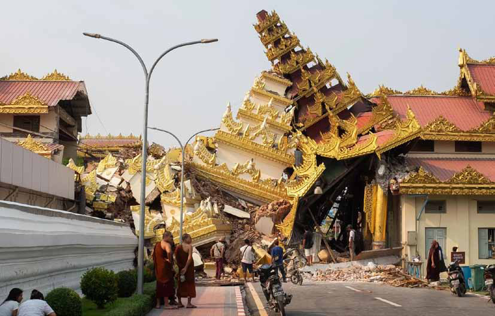
Jaffna Monitor hellojaffnamonitor@gmail.com 9 The military regime, already notorious for its secrecy and lack of transparency, began downplaying the true scale of the disaster. In a move to control the narrative, the junta swiftly suspended journalist visas, effectively shutting out the international media and limiting independent reporting on the ground. But Jaffna Monitor chose not to look away. Determined to witness the catastrophe firsthand, we set out for earthquake-hit Mandalay. We reached out to our contacts in Myanmar—including two “Rakhi sisters” of one of our senior correspondents, who lives in Sri Lanka. For readers unfamiliar with the term, the Rakhi sisters are not related by blood. The bond was formed years ago during a Raksha Bandhan celebration, when the two young women, residents of Mandalay, tied a symbolic rakhi (a sacred thread) on his wrist—a gesture signifying a lifelong sibling relationship. That bond of affection and solidarity has endured ever since. But this was no ordinary reporting trip. With commercial flights suspended and the military junta increasingly suspicious of anyone entering the country after the quake, we couldn't take the usual routes. Instead, we flew into Yangon and then undertook a long, discreet overland journey. For security reasons, we won’t disclose exactly how we reached Mandalay—but we got there. Somehow, within days of the disaster. One of our team members, a devoted Buddhist with strong connections to the monasteries and monks in Mandalay, arranged for us to stay at a Buddhist monastery located in the heart of the city. And what we saw… was beyond words. Mandalay After the Quake When we reached Mandalay—Myanmar’s second-largest city, once a vibrant hub adorned with majestic Buddhist and Hindu shrines, and strategically located along vital trade routes—it felt like stepping into the aftermath of an apocalypse. Once a flourishing cultural and commercial center that prompted
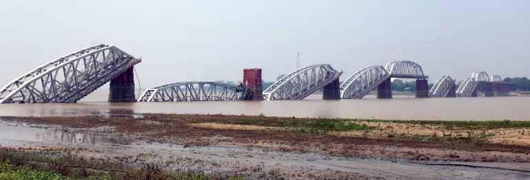
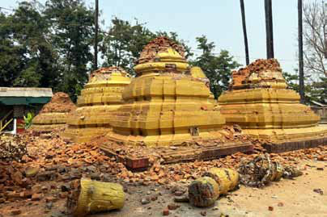
Jaffna Monitor hellojaffnamonitor@gmail.com 10 both regional powers, India and China, to establish consulates, Mandalay now lay in ruins. When Jaffna Monitor arrived, the city resembled a vast open-air refugee camp. Nearly everyone was outside. Many of Mandalay’s 1.5 million residents were sleeping on the streets, in parks, and on temple grounds—either because their homes had collapsed or out of fear that aftershocks would bring down the already-weakened structures. Wild rumors swept through the city— whispers of an even more powerful quake on the way. Even those whose homes remained intact refused to go inside. According to local sources, more than 5,000 people were killed—nearly double the death toll acknowledged by the military junta. Médecins Sans Frontières reported that over 500 buildings had collapsed entirely, with another 800 partially destroyed. Critical infrastructure was severely damaged: major bridges buckled, roads cracked open, and the city’s airport sustained structural damage. Power outages plunged Mandalay into darkness, while water and communication networks failed completely. With little to no access to heavy machinery, rescue efforts remained heartbreakingly rudimentary. Locals and volunteers dug through the debris using their bare hands and makeshift tools, desperate to find survivors. As of now, only 15 people have been pulled out alive. The rest… never made it. “There’s too much rubble, and no proper rescue teams have come for us,” sobbed a woman digging through the debris in search of her missing relatives. In the stifling April heat—when temperatures soared to 39–41°C—survivors and first responders labored under unbearable conditions. Occasional nighttime rains brought no relief—only added misery. Yet no one dared return indoors. “We would rather be drenched and bitten by mosquitoes than
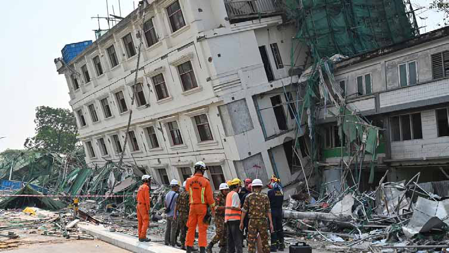
Jaffna Monitor hellojaffnamonitor@gmail.com 11 buried under bricks,” said Muthu, an elderly Tamil man, huddled beneath a tarpaulin sheet. The relatively well-off slept outdoors under mosquito nets, while the poor lay on bare ground with only a thin cloth—or nothing at all. But fear erased social divides. Ironically, everyone—from the affluent to the destitute— was united by the catastrophe. Anytime, an Epidemic’: Quake-Hit Mandalay Faces New Threat A local relief worker told Jaffna Monitor that delivering aid to everyone in need was “a near- impossible task.” The scale of the devastation was overwhelming. “There aren’t enough tents, not enough food or clean water. Women and children are especially vulnerable,” he said, visibly exhausted. Many families lacked basic hygiene kits, sanitary products, and baby formula. With sanitation systems completely broken down, open defecation was becoming increasingly common, and access to clean water was dangerously limited. “If this continues,” warned another aid worker, “we could be facing a deadly outbreak of cholera or other waterborne diseases.” He added grimly, “An epidemic could strike Mandalay any day now.” The Only Quake the Junta Fears Is a Truthquake One thing noticeably missing in Mandalay was a familiar sight that usually follows
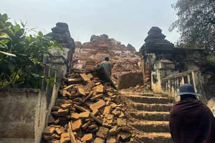
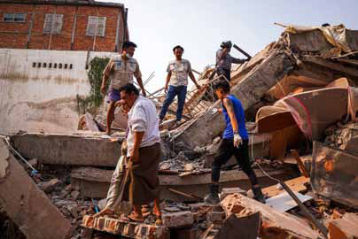
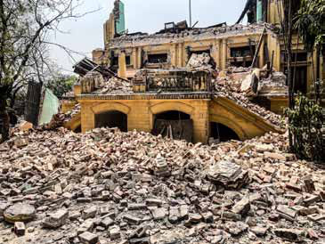
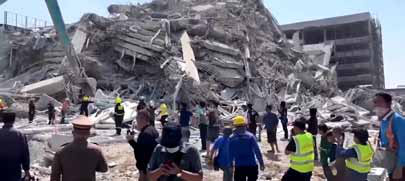
Jaffna Monitor hellojaffnamonitor@gmail.com 12 a major natural disaster: the presence of international journalists. Typically, media teams from around the world would converge to document the devastation and amplify the voices of survivors. But in Myanmar, the military junta effectively banned foreign journalists from entering the country and intimidated local reporters into silence. To justify the ban on international media, the junta issued what can only be described as a cruel excuse. In an official statement, the military claimed that, since “there is no proper accommodation or food facilities in the affected areas,” journalists would not be permitted entry—as if foreign correspondents were arriving for a luxury retreat amidst the ruins. But the real reason behind the ban is not logistical—it is political. Jaffna Monitor has learned that the junta’s true fear is scrutiny, not shortage. A Yangon-based journalist, Arrival of a Russian aircraft, captured by Jaffna Monitor A Hindu Tamil temple in Mandalay, Myanmar — captured by Jaffna Monitor
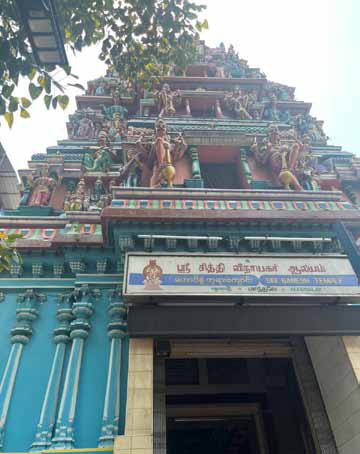
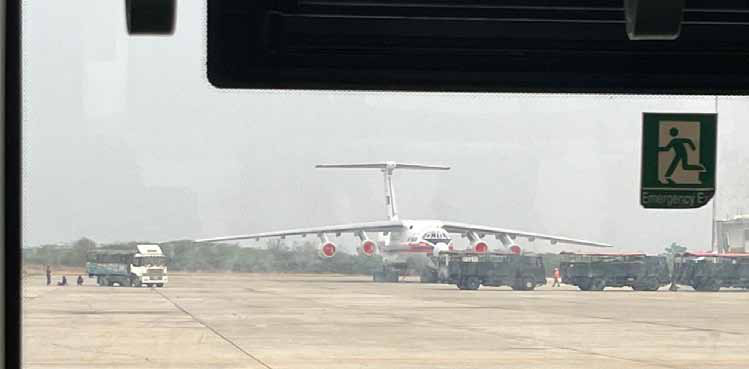
Jaffna Monitor hellojaffnamonitor@gmail.com 13 speaking on condition of anonymity due to obvious safety concerns, told us: “The junta is afraid that if foreign journalists are allowed in, they will head straight to the conflict zones and expose the brutal human rights violations being committed by the military.” Myanmar’s Military Drops Bombs Instead of Aid Since the February 2021 military coup—in which the junta seized power from Myanmar’s elected government—the country has been plunged into a nationwide civil conflict. Fierce resistance has emerged across multiple regions, most notably in Sagaing, Chin, Kayah, and the Karen States. The junta’s counterinsurgency campaign has been marked by aerial bombings, extrajudicial killings, the burning of entire villages, and deliberate attacks on civilian infrastructure, including schools and hospitals. The military’s brutality has not paused—even in the face of a humanitarian disaster. A Myanmar journalist based in Mandalay told Jaffna Monitor that in Sagaing—one of the regions hardest hit by the earthquake—the junta bombed an area where civilians were actively rescuing people trapped beneath collapsed buildings. “People were digging through the rubble to save others when the bombs fell,” the journalist said. “It was chaos. The junta didn’t care if they were hitting survivors or volunteers.” Multiple reports by the United Nations and international human rights organizations have accused the Tatmadaw—the official name of Myanmar’s military—of committing war crimes and crimes against humanity. The regime has aggressively sought to suppress this reality by tightly controlling the flow of information, arresting more than 150 journalists since the coup, and forcing nearly all independent media outlets to shut down, flee the country, or operate in hiding. Myanmar has a long and troubling history of blocking journalists and humanitarian workers—even in the wake of catastrophic
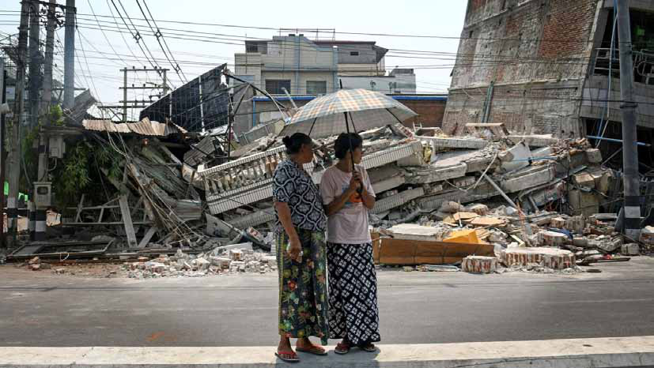
Jaffna Monitor hellojaffnamonitor@gmail.com 14 natural disasters. In 2008, when Cyclone Nargis devastated the Irrawaddy Delta and killed an estimated 138,000 people, the military regime shocked the world by denying international aid agencies access during the critical early weeks of the crisis. Thousands of lives were lost due to delayed assistance. The pattern repeated in 2023, after Cyclone Mocha—a powerful storm that battered Rakhine State and other western regions. Despite widespread destruction and displacement, the junta once again barred international humanitarian workers from reaching affected areas. Even the United Nations issued a rare public condemnation, urging the regime to permit lifesaving relief operations. “This time, however, is a little different,” a local civil society leader told Jaffna Monitor. In the aftermath of the March 2025 earthquake, the junta—for the first time in recent memory— issued an open call for international assistance. “They had no choice,” he explained. “The destruction was too massive, and they simply lacked the capacity to respond on their own.” As a result, emergency responders from the United Nations and several international NGOs were granted limited access—but only to areas firmly under military control. Rebel- held regions such as parts of Sagaing, Chin, and Kayah remained off-limits. In Mandalay itself, some neighborhoods had slipped from the junta’s grasp and were under the control of anti-junta resistance forces. Just across the Irrawaddy River, Sagaing had become one of the most intense battlegrounds in the ongoing civil conflict. While we were still in Mandalay, we heard the unmistakable sound of an airstrike—this time targeting civilian areas in earthquake-ravaged Sagaing. According to local sources, the junta had launched the attack as part of its continued military campaign against the People’s Defence Forces (PDF), a decentralized resistance
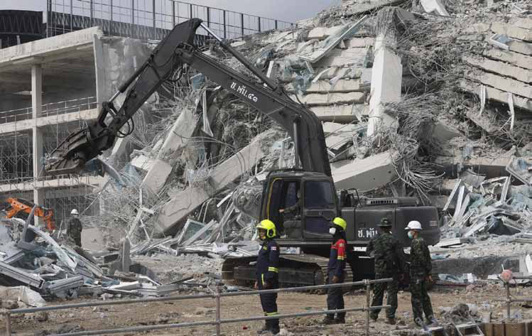
Jaffna Monitor hellojaffnamonitor@gmail.com 15 movement formed in response to the 2021 coup. To make matters worse, the junta blocked all humanitarian aid to rebel-held areas, halting relief efforts completely. Entire villages— already reduced to rubble by the earthquake— were denied even basic emergency support such as food, water, and medical supplies. Most of the People’s Defence Forces— composed largely of young, inexperienced fighters—operate under the command of the National Unity Government (NUG), a parallel government-in-exile formed by ousted lawmakers, ethnic minority leaders, and civil society representatives. While the junta brands the NUG and the PDFs as “terrorists,” many Burmese view them as the legitimate voice of resistance and hope. Shaken but Not Broken: Myanmar’s Centuries-Old Tamil Community Endures in the Quake Zone The Tamil community of Myanmar has a long, storied history—and a delicate present. Tamils, most of whom trace their ancestry to southern India, began migrating to Burma in the 19th century when both regions were under British colonial rule. Under British administration, many Indians— including Tamils—moved into Upper Burma as civil servants, traders, soldiers, and laborers. Over time, Tamils became an integral part of the country’s social and economic life, especially in cities like Yangon (formerly Rangoon) and Mandalay. Today, Tamils form the largest subgroup within Myanmar’s Indian-origin population, which makes up roughly 4–5% of the national demographic. Tamil is the most widely spoken Indian language in the country. Many Tamil families are now in their fourth or fifth generation in Myanmar and have preserved key aspects of their heritage—from Hindu temples and Tamil schools to traditional festivals—while integrating into broader Burmese society. Mandalay remains one of the central hubs of this community. Tamil traders and craftsmen have for decades run businesses ranging from textiles and spices to jewelry and tea shops. In the historic old town alone, around 500
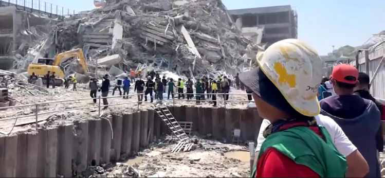
Jaffna Monitor hellojaffnamonitor@gmail.com 16 Tamil families have built a vibrant, close- knit community. The area is also home to two prominent Tamil temples: the Siddhi Vinayaka Temple (popularly known as the Ganesh Temple) and the Sri Muneeswaran Temple. Remarkably, both emerged unscathed from the recent earthquake—a fact many locals regard as nothing short of divine intervention. But the surrounding Tamil quarters were not so fortunate. Dozens of homes and shops were flattened. Once-busy tea stalls, saree shops, and temple courtyards now lie buried beneath rubble. Tamil Christian communities in nearby areas have also suffered deeply. In Chin Nyaung Pin Thar, a village outside Mandalay, the Calvary Prayer Hill and surrounding Christian settlements sustained extensive damage during the quake, leaving many injured and displaced. “As with their Burmese neighbors, Tamil families have been left homeless and are struggling to secure even the most basic necessities—clean water, food, and medicine,” said a retired schoolteacher and community elder. His own home in Mandalay’s 26th Street Tamil quarter was destroyed. “My daughter and grandchildren are sleeping under a tree in the temple compound. We haven’t received any formal aid. Everything we’re eating now comes from what the community cooks together in large pots,” he told Jaffna Monitor. A Yangon-based Tamil aid coordinator confirmed the lack of organized relief in several neighborhoods across Mandalay. “Many areas have yet to be reached by aid agencies,” she said. “The Tamil enclaves in Mandalay are among them. Most residents
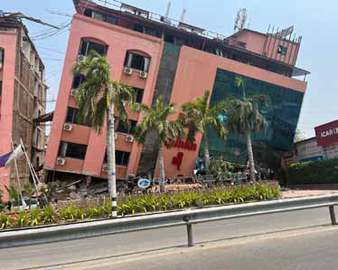
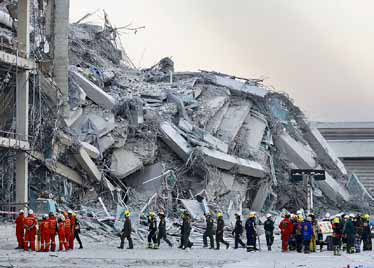
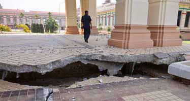
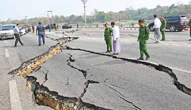
Jaffna Monitor hellojaffnamonitor@gmail.com 17 are relying entirely on grassroots, community- driven solidarity.” Still, amid the devastation, resilience prevails. Community members—regardless of ethnicity—have come together to share what little they have. Volunteers like 19-year-old Arulmurugan from the Tamil Youth Forum have been delivering food packets and boiled water from makeshift kitchens. “We don’t ask if someone is Tamil or Bamar,” he said. “We just ask, ‘Have you eaten?’” Aid Stalled. Fear Spreads For a brief period following the earthquake, Myanmar’s military junta eased roadblocks and allowed limited humanitarian access. But during Jaffna Monitor’s time in Mandalay, we witnessed a reversal: roadblocks and military checkpoints were swiftly re-established, restricting the movement of both local and international relief workers. While foreign rescue teams from neighboring countries were technically permitted entry, their operations remained tightly controlled. Teams from India, China, Thailand, Singapore, Laos, Malaysia, and Russia were escorted by the military and confined to designated zones within Mandalay. Among the international presence, Russian rescue workers stood out. According to a local anti-junta activist who spoke to Jaffna Monitor, “Russia is the junta’s main facilitator—offering moral, financial, and even military support.” Two Russian aircraft landed in Mandalay, carrying more than 300 rescue workers. Yet despite their numbers, one Russian relief worker privately admitted they had rescued only a single person alive from the debris. A group of Sri Lankans working in Yangon pooled their own resources to deliver aid. “We couldn’t just sit and watch,” said one volunteer. “Even though we’re far from home, we know what it means to suffer. We just wanted to help.” The group traveled to Mandalay and directly distributed food, water, and essential supplies to affected families. A Tamil home in Mandalay damaged by the earthquake
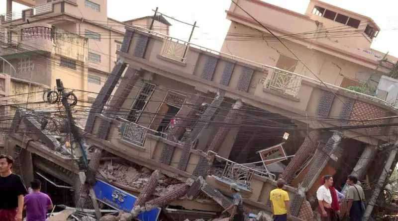
Jaffna Monitor hellojaffnamonitor@gmail.com 18 Echoes of Mullivaikkal Though the military junta has banned relief work in rebel-held areas—and continues relentless shelling even as civilians remain trapped under debris—Jaffna Monitor has learned that some courageous local organizations are still carrying out humanitarian operations in these zones, albeit clandestinely. “We call them low-profile operations,” said one aid worker who managed to enter the rebel-controlled territories. Speaking under strict anonymity, he described the situation as “unexplainable, almost medieval.” Hospitals have been destroyed or abandoned, and even the most basic medical supplies—antibiotics, painkillers, bandages—are nearly impossible to find. “No outsiders are allowed in, and the military doesn’t want the world to know what’s happening here,” he added. The current crisis bears an unsettling resemblance to a dark chapter in recent history—the final months of Sri Lanka’s civil war in 2009—when tens of thousands of Tamil civilians were trapped between an unrelenting military offensive and the rigid extremism of the LTTE, with no access to humanitarian assistance or safe passage. “What we are witnessing now is disturbingly similar,” a Tamil aid worker told Jaffna Monitor. “As in Sri Lanka, it is the ordinary civilians—not the decision-makers—who are caught in the crossfire.” Another relief worker echoed the tragedy: “Most of these people were already victims of war—displaced, impoverished, traumatized. Now the earthquake has shattered what little they had left.” Where Does the Aid Go? Junta’s Grip Casts Doubt on Relief Efforts Given the deeply corrupt nature of Myanmar’s military junta, relief workers who spoke with Jaffna Monitor expressed serious skepticism about how much of the international aid will actually reach those most in need. Members of several relief agencies now argue that humanitarian assistance must be channeled through independent local networks—such as monasteries, community groups, and civil society organizations—rather than routed through the junta. Only then, they insist, can essential supplies genuinely reach affected communities. An aid worker recalled how, in the past, multiple governments had sent direct assistance to the military regime following natural disasters—only to later find that much of the aid never reached the public. “Some of it ended up in the homes of military leaders,” he said, “and the rest was being sold openly in local markets.” Having witnessed this firsthand, he questioned the logic of repeating the same mistake. “Now again, some countries are sending aid directly to the junta, bypassing proper humanitarian channels. How can they be sure it won’t be exploited just like before?” “Apart from the United States, many countries have offered help,” another aid worker told Jaffna Monitor. “But the real question is—how much of it actually reaches the people?” With corruption in the junta being well-documented, and in the absence of transparency or independent oversight, there is growing fear that a significant portion of the aid is being diverted, politicized, or simply disappearing without a trace.
Jaffna Monitor hellojaffnamonitor@gmail.com 19 I ndian Prime Minister Narendra Modi, during his whirlwind visit to Sri Lanka, held a 45-minute meeting with a Tamil political delegation representing the Northern and Eastern Provinces. The group was made up of representatives from the Ilankai Tamil Arasu Katchi (ITAK), the Democratic Tamil National Alliance (DTNA), and the Tamil National People’s Front (TNPF). Interestingly, the delegation was formed based on a 4:2:1 ratio proposed by the Indian side— four from ITAK, two from DTNA, and one from TNPF. The Tamil National Alliance (TNA) was represented by Acting President C.V.K. Sivagnanam, General Secretary M.A. Sumanthiran, and Members of Parliament S. Shritharan and Shanakiyan Rasamanickam. From the DTNA, MPs Selvam Adaikalanathan and Dharmalingam Siddharthan took part, while the TNPF was represented by its leader, MP Gajendrakumar Ponnambalam. Modi Preaches Unity, Tamil Leaders Ask: ‘Where’s That Being Sold?’ BY: Our Special Correspondent
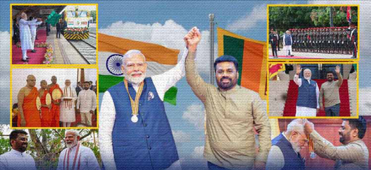
Jaffna Monitor hellojaffnamonitor@gmail.com 20 During the meeting with the Tamil political delegation, Indian Prime Minister Narendra Modi paid heartfelt tributes to the late Tamil political leaders R. Sampanthan and Mavai S. Senathirajah, describing them as stalwarts of Tamil politics in Sri Lanka and personal associates. “I wish to express my condolences on the passing of respected Tamil leaders Mr. R. Sampanthan and Mr. Mavai Senathirajah. They were personally known to me, and their loss marks the end of an era,” PM Modi told the delegation. “I remember how, during their time, Tamil parties stood united under one umbrella.” Not stopping there, Modi took to X (formerly known as Twitter) shortly after the meeting, posting: “It is always a pleasure to meet with the leaders of the Tamil community in Sri Lanka. During this meeting, I conveyed my condolences on the passing of respected leaders R. Sampanthan and Mavai Senathirajah, both of whom I personally knew. I reaffirmed India’s unwavering commitment to ensuring equality, dignity, and justice for the Tamil community within a united Sri Lanka. Several projects and initiatives launched during my visit will continue to contribute to the social, economic, and cultural advancement of the Tamil people.” The Art of War: Sumanthiran vs. Sritharan Here’s the funny bit that didn’t make the official press releases: the lead-up to Prime Minister Narendra Modi’s meeting with the Tamil political delegation had its own mini power struggle—starring none other than the two rivals locked in the ongoing leadership tussle within the Ilankai Tamil Arasu Katchi (ITAK): M.A. Sumanthiran and S. Shritharan. Sources say that both were working overtime behind the scenes to make sure the other didn’t get a chance to meet Modi. In a rather crafty move, Sumanthiran allegedly suggested that only the party’s President and General Secretary should attend the meeting, which conveniently meant himself and his loyalist, Acting President C.V.K. Sivagnanam—leaving others out. Indian Prime Minister Narendra Modi with leaders of ITAK, DTNA, and TNPF in Colombo
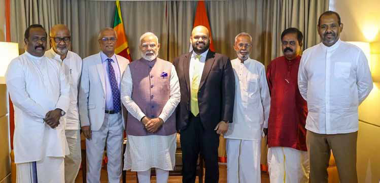
Jaffna Monitor hellojaffnamonitor@gmail.com 21 But not to be outmaneuvered, Shritharan countered with a suggestion of his own: only sitting MPs from ITAK should be invited— handily excluding Sumanthiran, who failed to win a seat in the last parliamentary elections. Caught in the middle of this political ping- pong, the Indian side—clearly no strangers to Lankan Tamil petty politics—saw through the behind-the-scenes drama. They proposed that the ITAK delegation include the President, the General Secretary, and two MPs, ensuring that no one could claim victory in this unfolding Tamil telenovela. Accordingly, ITAK President C.V.K. Sivagnanam, General Secretary M.A. Sumanthiran, and sitting MPs Shanakiyan Rasamanickam and S. Shritharan made the cut. Modi’s Age Check Leaves ITAK President Blushing, Others Chuckling Prime Minister Narendra Modi, known for his diligence in background checks before meeting any delegation, reportedly asked ITAK President C.V.K. Sivagnanam with a smile, “Are you over 90?” Sivagnanam replied with a chuckle, “No, no… I’m just 85.” Modi then remarked, “You’re probably the oldest Tamil politician in Sri Lanka,” according to a source who attended the meeting. While the exchange appeared to be a lighthearted moment, a source within the ITAK later joked to Jaffna Monitor that Modi ji was perhaps subtly asking why Sivagnanam, at his age, wasn't enjoying retirement with his great-grandchildren—instead of acting as a puppet president for ITAK and playing the loyal footman to M.A. Sumanthiran. ITAK’s Electoral Maths: 5 > 1 Of the four members representing ITAK in the delegation, three hailed from the North— specifically Jaffna—while only one, Shanakiyan Rasamanickam, represented the East (Batticaloa). The other three Tamil delegates— two from the DTNA and one from the TNPF—were also from the Northern Province. This regional imbalance sparked sharp criticism on social media and among political observers, who questioned, “Are Eastern Tamil leaders not considered leaders too?” ITAK, in particular, came under fire, with many pointing out that in the last parliamentary election, the party secured just one seat in Jaffna, while it won five seats in the East. Critics argue that this representation does not reflect the party’s current electoral base, and accuse ITAK’s leadership of continuing a Jaffna-centric approach at the expense of genuine inclusivity and balanced regional representation. Lights, Camera, Boycott! According to credible sources, ITAK (read: M.A. Sumanthiran and his loyal circle) had internally decided that Sumanthiran would speak on behalf of the Tamil delegation during the meeting with Prime Minister Modi. It was all neatly arranged—with a rehearsal, no less. A few hours before the official interaction, the four-member team even held a mock round, presumably to get the script just right. But the drama didn’t end there. Sumanthiran’s arch-rival, MP S. Sritharan, reportedly skipped the rehearsal altogether—either as a silent protest or perhaps to avoid being typecast as a side character in what he saw as “The Sumanthiran Show.” And if that wasn’t dramatic enough, Sritharan doubled down by boycotting the official
Jaffna Monitor hellojaffnamonitor@gmail.com 22 ITAK press conference held after the meeting with Modi. As one insider quipped to Jaffna Monitor, “It was less of a press conference and more of a one-man monologue.” India Reaffirms Support for Tamil Rights, Provincial Polls on the Horizon Sources who attended the meeting told Jaffna Monitor that the closed-door discussion took place at the Taj Samudra Hotel and lasted approximately 45 minutes. During the dialogue, Prime Minister Modi conveyed that the Sri Lankan government, under President Anura Kumara Dissanayake, had given a clear commitment to hold the long-delayed Provincial Council elections—but only after the conclusion of local government polls and the implementation of necessary legal reforms. According to those present, Modi assured the Tamil delegation that India would “do everything possible” to support this democratic process, and emphasized that New Delhi remains committed to Tamil political empowerment within a united Sri Lanka. He reportedly told the delegation, “India is like your second home. You are welcome in Delhi at any time to engage in dialogue and share your concerns.” The discussion also addressed the pressing issue of fishermen's rights, a longstanding source of friction between communities across the Palk Strait. Modi is said to have stressed the need for a humane and cooperative resolution, while voicing support for ending illegal bottom trawling practices—which have contributed to environmental degradation and increased tensions between Indian and Sri Lankan fishing communities. Tamil Leaders Thank India, Demand Federal Path Beyond 13th Amendment. At a press conference following their meeting with the Indian Prime Minister, Tamil political leaders raised a series of pressing concerns, ranging from power devolution and development to environmental and livelihood issues. MP M.A. Sumanthiran welcomed India’s insistence on holding Provincial Council Prime Minister Narendra Modi with Sri Lankan President Anura Kumara Dissanayake in Anuradhapura
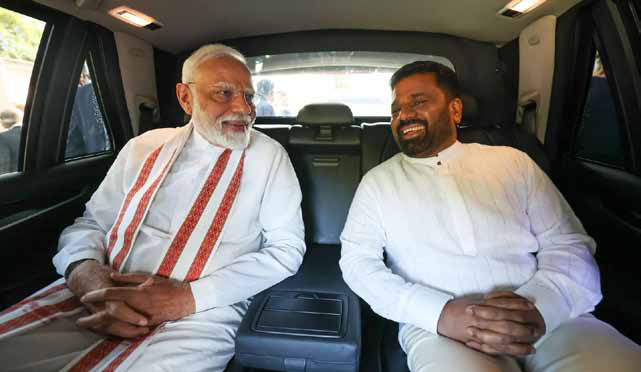
Jaffna Monitor hellojaffnamonitor@gmail.com 23 elections but made it clear that “the 13th Amendment, even if fully implemented, is not enough” to deliver meaningful power-sharing. He highlighted the ongoing land appropriation in Tamil-majority areas. He also urged India to invest in long-term development in the North and East—particularly in housing, education, and infrastructure. Dharmalingam Siddharthan expressed gratitude for Indian-backed projects like the Jaffna Cultural Centre, and stressed the urgent need for job-creating investments in the region. “We asked for Indian support to resolve the fisheries conflict and create employment for youth,” he said, adding that Prime Minister Modi responded positively and showed a willingness to engage further. TNPF Leader Gajendrakumar Ponnambalam struck a firmer tone, describing the 13th Amendment as a “distorted outcome” of the Indo-Lanka Accord. He said he had told PM Modi that genuine power-sharing cannot occur within a unitary state, and that India must help move the Tamil question beyond that framework and urged him to invite Tamil political parties to Delhi for meaningful discussions on establishing a shared governance model under the Indo-Lanka Accord. Gajendrakumar also expressed full support for India-led development in the North and East, but with a firm caveat: it must not alter the demographic composition of the region—a pointed reference to Sinhala settlements that quietly may have crept in under the banner of "development." But as one observer cheekily noted, for a man so vehemently opposed to Sinhala workers settling in Tamil areas, he didn’t quite explain how he himself came to own acres of prime land in the heart of Colombo and other Sinhala-majority zones. “One even wondered aloud,” the observer added, “whether he plans to donate that land to landless Sinhala families—just to keep things ideologically consistent.” Gajendrakumar also stressed that developments must not open the door to foreign powers hostile to India’s interests—a not-so-subtle nod to China, which, unsurprisingly, likely earned him an approving smile or two from the Indian side. Prime Minister Narendra Modi worshipping at the sacred Bodhi Tree in Anuradhapura
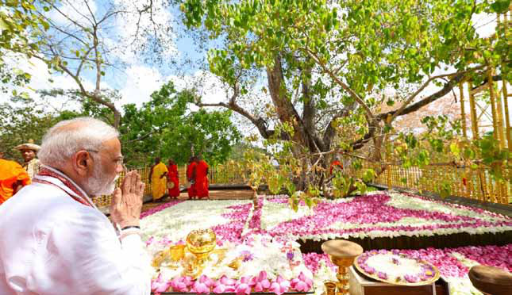